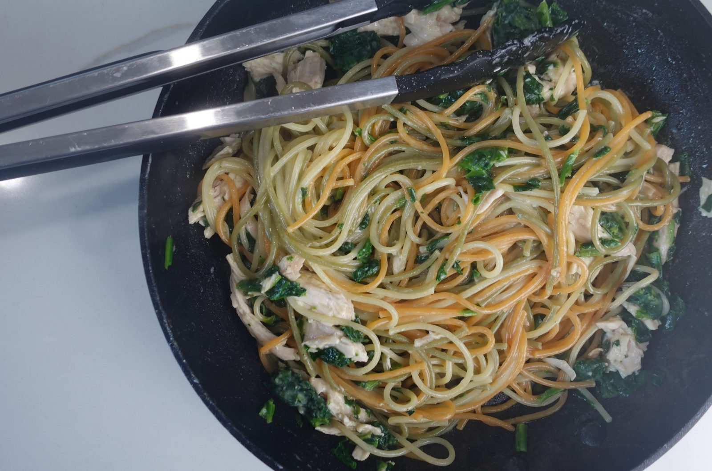

Pasta

Ingredients
- 5 oz dried spaghetti
- 5 oz dried spaghetti
- ¼ cup grated parmesan cheese
- ½ cup frozen spinach
- ½ cup rotisserie chicken
- Salt and pepper to taste
- Fill a wide pan with enough water to cover the pasta, about 3-4 cups. Bring to a boil and add a big pinch of salt. Add the pasta and cook according to the brand’s instructions. Once al dente, pour out most of the water, leaving about a third of a cup of pasta water in the pan.
- Add the butter and stir vigorously to combine the butter with the pasta water. Once the butter is fully melted and incorporated into the sauce, taste and adjust for seasoning with salt and pepper.
- Grate in parmesan cheese. Add the spinach and rotisserie chicken. Stir on low heat until the spinach is defrosted and the chicken is warm, about 3-4 minutes.
Back to Main page